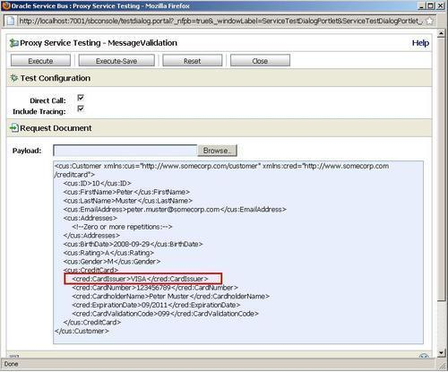
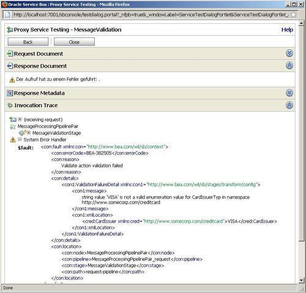

In this recipe, we will show how to use the Validate action to perform message validation. We will use the same proxy service setup we have used in the Using the For Each action to process a collection recipe, with a proxy service with a Messaging Service type interface accepting a customer element. We will use the Validate action in the proxy service to make sure that the message passed in is a valid customer.
You can import the OSB project containing the base setup for this recipe into Eclipse OEPE from \chapter-9\getting-ready\using-validate-to-do-message-validation.
Let's add the Validate action to the proxy service we imported previously in the Getting ready section. In Eclipse OEPE, perform the following steps:
MessageValidationStage. body into the In Variable field. ./cus:Customer into the Expression field. Click OK.Now let's test the validation of our proxy service. In the Service Bus console, perform the following steps:
proxy folder inside the using-validate-to-do-message-validation project.

The Validate action can be used to check the content of any variable against an element or type of an XML schema. The validation can be configured to either save the Boolean result of the validation in a variable or to raise an error if the validation fails. An error will hold the error code BEA-382505 and the message will hold further details about the failed validation.
By using the XPath expression, it's also possible to only check fragments, inside a larger XML message, for validity.
The Validate action cannot be disabled, if it's included in the Message Flow tab, then it will always be executed. To programmatically exclude it, it can be wrapped inside an If Then action. Refer the Enabling/Disabling a Validate action dynamically recipe for how to achieve that.